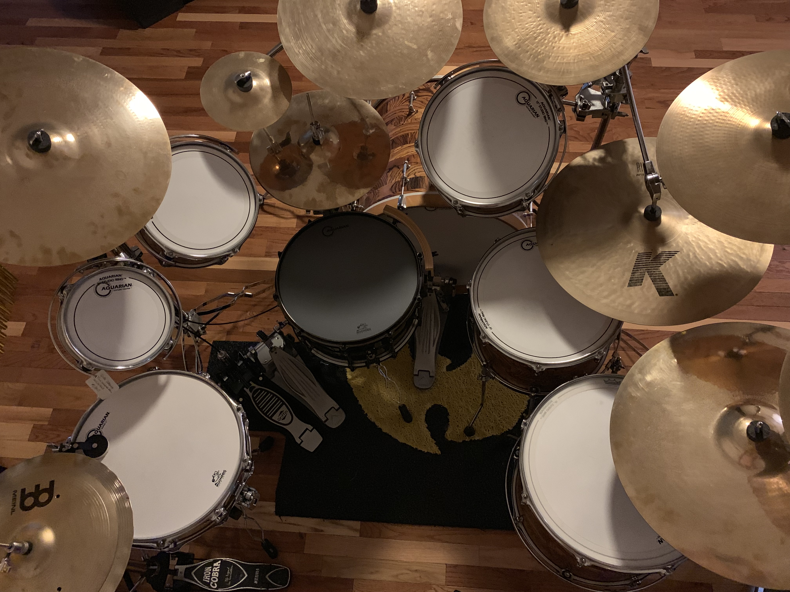

Gallery



Professional Drummer
Live Performance • Studio Recording • Touring • Fill-In Gigs
Professional drummer with extensive experience performing live, recording in studio environments, touring, and supporting artists across a variety of musical styles.
Available for recording sessions, live performances, touring, substitute gigs, and collaborative musical projects.
Professional drum tracks for artists, songwriters, and producers.
Concerts, corporate events, festivals, church services, and special events.
Reliable substitute drummer available for short-notice opportunities.

A sense of humor is required in music.

Interested in recording sessions, touring, live performances, or fill-in work?
Email: jrooks79@me.com